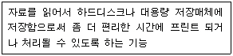
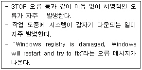
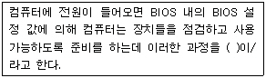

PC정비사-1급 (2009-09-27 기출문제)
1과목: PC운영체제
1. Windows XP의 인터넷 정보 서비스(IIS)를 이용하여 제공하는 인터넷 서비스의 종류가 아닌 것은?
- NNTP 서버 구축
- Web 서버 구축
- SMTP 서버 구축
- FTP 서버 구축
(정답률: 60%)

2. Windows XP Professional의 로컬 그룹에 대한 설명으로 잘못된 것은?
- Administrators : 컴퓨터/도메인에 모든 액세스 권한을 가진 관리자
- Backup Operators : 파일을 백업하거나 복원하기 위해 보안 제한을 변경할 수 있는 백업 관리자
- Power Users : 일부 권한을 제외한 관리자 권한을 가진 고급 사용자. 인증된 응용 프로그램과 다른 응용 프로그램을 실행할 수 있음
- Guests : 이 그룹의 구성원은 원격으로 로그온 할 수 있는 권한이 주어짐
(정답률: 47%)
3. 인터넷 웹사이트의 방문 정보를 기록하는 텍스트 파일로, 사용자 정보가 유출될 수 있는 단점이 있는 것은?
- 크래커
- 캐시
- 쿠키
- 패치
(정답률: 75%)
4. 레지스트리에 대한 설명 중 틀린 것은?
- Windows를 설치하고 최적의 환경을 구성한 후 Windows의 레지스트리를 백업한다.
- Windows를 재설치하거나 시스템 파일을 편집하는 등 Windows의 안정성을 보장할 수 없는 w작업을 할 때는 레지스트리를 백업한 후 작업을 시작한다.
- Windows XP/2000은 레지스트리의 안정성을 위해 레지스트리 자동 복구 기능을 제공하지 않는다.
- Windows 시작시 “There is not enough memory to load the registry”라는 오류 메시지는 메모리가 부족한 경우이거나, 레지스트리 파일이 손상되었다는 의미로, 레지스트리를 복구하면 해결된다.
(정답률: 55%)
5. Windows XP의 ‘디스크 관리’에 대한 설명 중 잘못된 것은?
- Windows를 설치하고 부팅한 시스템 드라이브의 드라이브 문자는 변경할 수 없다.
- CD-ROM의 드라이브 문자는 고정되어 있으며, Windows 상태에서 변경할 수 없다.
- 전체 이동식 저장장치는 자동인식에 의하여 관리 되므로 이동식 저장소라는 관리 도구를 이용해 관리할 필요성이 적다.
- 디스크 조각 모음은 로컬 볼륨을 분석하고, 조각난 파일과 폴더를 찾아 통합하는 시스템 유틸리티이다.
(정답률: 50%)
6. 다중 프로그램 방식에 대한 설명으로 옳은 것은?
- 여러 개의 작업을 하나로 묶어 자동적으로 처리하는 방식이다.
- 데이터가 발생하는 즉시 컴퓨터에서 처리가 이루어지는 시스템이다.
- CPU의 기다리는 시간을 없애고 연속적으로 처리하여 CPU의 효율적 이용이 가능하다.
- 초기 컴퓨터에서 사용하던 방식으로 많은 시간을 필요로 하는 방식이다.
(정답률: 40%)
7. 다음 중 가상 메모리와 관련이 없는 것은?
- Page Fault
- Demand Paging
- Thrashing
- DMA
(정답률: 43%)
8. Windows XP의 인터넷 정보 서비스(IIS)에 기본적으로 설정되는 HTTP 오류 코드와 의미가 잘못 연결되어 있는 것은?
- 400 : Bad request, 클라이언트의 잘못된 요청으로 처리할 수 없음
- 401 : Unauthorized, 클라이언트의 인증 실패
- 403 : Forbidden, 접근이 거부된 문서를 요청함
- 404 : Request-URI too long, URL이 너무 김
(정답률: 52%)
9. 인터넷 서비스 중 인터넷 상에서 채팅을 할 수 있도록 지원하는 서비스로서 어떤 주제에 관하여 실시간(real-time)으로 다른 사람과 대화할 수 있도록 하는 인터넷 서비스는?
- Gopher
- Usenet
- IRC
- FTP
(정답률: 51%)
10. 파일 포맷 시 사용하는 외부명령어로써 빠른 포맷(퀵 포맷이라고 함)을 하고자 할 때 사용하는 명령어는?
- FORMAT C:/S
- FORMAT C:/P
- FORMAT C:/Q
- FORMAT C:/F
(정답률: 68%)
11. Windows XP의 관리 도구에 대한 설명이다. 각 서비스파일이 올바르게 연결된 것은?
- Alerter - 선택된 사용자와 컴퓨터에 관리 경고를 알린다. 서비스가 중지되면 관리 경고를 사용하는 프로그램에서 관리 경고를 받지 않게 된다.
- Application Layer Gateway Service - 프로그램을 설치하거나 삭제하는 일을 한다. 이 서비스를 멈추게 하면 응용프로그램을 설치하거나 삭제할 수 없다. 초기 값 수동을 그대로 두어야 하는 서비스다.
- Application Management - 마이크로소프트 Windows 업데이트 사이트에서 업데이트 파일을 내려 받고 설치하는 일을 한다. 서비스를 켜지 않아도 수동으로 업데이트하면 된다.
- Automatic Updates - 인터넷 연결 공유나 인터넷 연결 방화벽을 쓸 때 필요하다. Windows XP가 기본으로 내장한 방화벽 서비스를 쓸 때는 수동이나 자동으로 설정돼 있어야 한다.
(정답률: 49%)
12. Windows XP로 설치되어 있는 컴퓨터의 그룹정책을 설정 하려고 한다. 이에 해당하는 실행 파일은?
- Dfrag.msc
- Devmgmt.msc
- Gpedit.msc
- Diskmgmt.msc
(정답률: 63%)
13. 제어판의 시스템 등록정보에서 장치관리자에 표시되는 ‘!’표시의 원인으로 잘못된 것은?
- 장치가 제대로 연결되지 않았거나 드라이버가 제대로 설치되지 않았다.
- 장치 구동 드라이버 파일이 손상되어 제대로 작동하지 않는다.
- 다른 장치와 충돌이 발생하였다.
- PnP(Plug & Play) 기능이 지원되지 않는 장치이다.
(정답률: 48%)
14. Windows XP를 관리 할 때 사용되는 프로그램 중 WWW, Gopher, FTP등의 인터넷 서비스를 운영하기 위해 사용되는 것은?
- 디스크 관리자
- 시스템 관리자
- 인터넷 서비스 관리자
- 사용자 관리자
(정답률: 63%)
15. Windows에서 CTRL키를 누르고 파일을 선택하는 방법을 주로 사용하는 때를 설명하는 것은?
- 비연속적인 파일을 선택
- 파일 전체를 선택
- 연속적인 파일을 선택
- 하나의 파일을 선택
(정답률: 54%)
2과목: PC주변기기
16. 광디스크에 사용되는 라이트스크라이브(LightScribe) 기술에 대한 설명으로 잘못된 것은?
- 레이저를 이용해 사용자가 원하는 문자나 도안을 CD 또는 DVD 미디어 표면에 인쇄하는 기능이다.
- 광학저장장치가 라이트스크라이브를 지원해야만 사용할 수 있다.
- 라이트스크라이브가 지원되는 특수 코팅된 전용 공 CD 또는 DVD에만 사용할 수 있다.
- 한번 기록된 문자나 도안을 다시 지우고 입력할 수 있다.
(정답률: 48%)
17. 갑작스런 정전에도 컴퓨터에 전원을 계속 공급해 줄 수 있는 장치는?
- Power Saver
- IPS
- UPS
- Power Supply
(정답률: 68%)
18. PC에 마우스를 연결하여 사용하는데 이용되지 않는 인터페이스는?
- USB
- PS/2
- Serial
- IEEE1394
(정답률: 45%)
19. 하드디스크를 메인보드와 연결하기 위한 두 가지 인터페이스 방법은?
- EIDE, SCSI
- NTFS, FAT
- EIDE, NTFS
- FAT, SCSI
(정답률: 54%)
20. 파워 서플라이에 대한 설명 중 옳지 않은 것은?
- PC의 각 장치에 전원을 공급하는 장치이다.
- 외부로 부터 공급되는 전원은 DC이며, 각 부품은 AC로 변환되어 전달된다.
- 성능은 용량에 의해서 결정된다.
- 용량이 크면 안정적인 전원 공급이 이루어진다.
(정답률: 62%)
21. 적외선을 이용하는 무선 통신 인터페이스에 사용되는 기술은?
- IEEE 1394
- SCSI
- USB
- IrDA
(정답률: 54%)
22. 특정 해상도나 작업 도중에 모니터 화면에 얼룩이 지고 물결 모양의 나선이 나타나는 현상은?
- 모아레
- 핀쿠션
- 버닝
- 방자
(정답률: 48%)
23. 프린터의 전송 모드에 대한 규약이 아닌 것은?
- EPP
- ECP
- LPT
- SPP
(정답률: 64%)
24. 모니터 및 그래픽 카드에서 표현할 수 있는 최대 해상도와 밀접한 관계가 없는 것은?
- 그래픽 카드의 메모리 용량
- 모니터 지원여부
- RAMDAC(RAM Digital-to-Analog Converter)의 속도
- PnP(Plug & Play)의 지원 여부
(정답률: 48%)
25. 동영상 기술인 MPEG(Moving Picture Experts Group)에 대한 설명으로 옳지 않은 것은?
- MPEG는 1998년 ISO 및 IEC 산하에서 멀티미디어 표준의 개발을 목적으로 설립된 동화상 전문가 그룹이다.
- ITU 산하의 VCEG와 함께 H.264/AVC 표준을 공동 제정하고 있다.
- MPEG는 손실 압축 방법을 사용하며 JPEG의 압축 기술인 영상의 중복성을 제거하는 방법을 사용한다.
- MPEG-4는 MPEG-3을 더욱 개선시킨 기술로 전화선을 이용한 화상회의 시스템과 동영상 데이터 전송 목적으로 사용된다.
(정답률: 49%)
26. 다음에서 설명하고 있는 프린터 관련 용어는?

- Swap
- Spool
- DMA
- Overplay
(정답률: 67%)
27. INTEL의 모바일용 CPU에 채택된 기술로서 배터리의 사용시간을 연장하는 기술은?
- 스피드 스텝
- 3D나우
- 넷버스트 아키텍쳐
- 파워나우
(정답률: 54%)
28. AGP(Accelerated Graphics Port)에 대한 설명으로 잘못된 것은?
- 인텔사에 의해 개발된 규격이다.
- 데이터 전송률이 PCI의 약 2배의 속도로 동작한다.
- 데이터 전송이 많은 3D그래픽 카드에 많이 사용된다.
- ISA 방식에 기반을 두었다.
(정답률: 43%)
29. 개인컴퓨터에 다중의 주변장치를 쉽게 통합시키고자 개발된 Bus 방식으로 각 주변 장치간의 직접적인 연결이나 허브를 통한 연결 하에서 작동하는 Bus 방식은?
- PCI
- USB
- ISA
- EISA
(정답률: 63%)
30. DVD 지역코드는 전 세계를 6개 지역으로 분할한다. 한국이 포함되어 있는 지역은?
- 1지역
- 2지역
- 3지역
- 5지역
(정답률: 60%)
3과목: 디지털 논리회로
31. 7bit로 구성된 코드는?
- EBCDIC 코드
- 3중 코드
- ASCII 코드
- BCD 코드
(정답률: 66%)
32. 전가산기의 올바른 구성은?
- 반가산기 2개와 AND 게이트 1개
- 반가산기 2개와 AND 게이트 2개
- 반가산기 2개와 OR 게이트 1개
- 반가산기 2개와 OR 게이트 2개
(정답률: 52%)
33. 주기억장치의 용량보다 크기가 큰 프로그램을 사용하기 위한 방식은?
- DMA
- PLA
- Cache 메모리
- Virtual 메모리
(정답률: 50%)
34. 10진수 10를 2진수로 표현하기 위하여 필요한 Bit 수는?
- 1 Bit
- 2 Bit
- 3 Bit
- 4 Bit
(정답률: 62%)
35. CPU 내에서 자료가 일시적으로 기억되는 임시 기억장치는?
- 레지스터
- 버스
- 칩셋
- 연산 프로세서
(정답률: 49%)
4과목: PC유지보수
36. 다음과 같은 증상이 발생했을 때 점검해야 할 장치는?

- HDD
- CPU
- Memory
- FDD
(정답률: 49%)
37. DLL(Dynamic Link Library) 파일 관련 오류 발생 시 보호된 파일을 찾아내는 명령어는?
- sfc/scannow
- scanreg/restore
- sys A:C:
- convert C:/FS:NTFS/X
(정답률: 61%)
38. 다음 ( )안에 알맞은 단어는?

- BOOT
- OS
- POST
- RAM
(정답률: 57%)
39. CPU의 원래 속도 보다 더 높게 클록을 설정하여 사용하는 것을 뜻하는 것은?
- 오버 클럭킹
- 가상 메모리
- 핫 플러킹
- 슈퍼 스칼라
(정답률: 64%)
40. 컴퓨터 부팅과정 중 메모리를 테스트 하는 과정이 있다. 이에 대한 설명으로 옳은 것은?
- 장착된 메모리가 정확하게 동작을 하는지 확인하는 과정이다.
- 메모리의 용량이 필요이상으로 많이 장착되어 있기 때문이다.
- 컴퓨터 운영 중 작동상의 에러이다.
- Windows 제어판에서 가상 메모리 크기를 실제 메모리의 2배로 설정하면 메모리 테스트과정이 생략된다.
(정답률: 50%)
41. 어워드 바이오스에서 하드디스크의 타입을 설정할 수 있는 항목은?
- Standard CMOS Setup
- BIOS Features Setup
- Chipset Features Setup
- PNP/PCI Configuration
(정답률: 56%)
42. Windows 사용 중 치명적인 오류가 불규칙적으로 발생한다. 이러한 현상은 특정 프로그램을 실행할 뿐만 아니라 광범위하게 발생한다. 이에 대한 일반적인 원인으로 잘못된 것은?
- 파티션 설정이 잘못되었다.
- 중요한 H/W 또는 S/W와 Windows의 호환성 문제이다.
- Windows의 시스템 정보 파일에 오류가 발생하였다.
- 중요 드라이버 파일에 오류가 발생하였다.
(정답률: 55%)
43. 사용 중인 장비의 전원을 끄지 않은 상태에서 하드디스크나 심지어 전원을 교체해도 시스템에서 바로 인식하는 기술로 PnP의 발전된 형태라 할 수 있는 것은?
- Hot Swap
- SCSI
- PCI
- ACI
(정답률: 53%)
44. BIOS에서 제어할 수 없는 것은?
- 부트 디스크 설정
- 물리적 메모리 용량 설정
- 하드디스크 타입(Type) 설정
- IRQ 및 DMA 설정
(정답률: 50%)
45. PC에서 컴퓨터 바이오스와 운영체제에 PnP 장치들과의 통신을 위한 정보를 제공하는 데이터는?
- ESCD(Extended System Configuration Data)
- NVRAM(Non-Volatile RAM)
- DMA
- CMOS ROM
(정답률: 48%)
46. Windows로 부팅한 이후 갑자기 다운이 되는 증상이 발생하는 이유로 잘못된 것은?
- CPU의 오버 클럭킹은 CPU 속도와 관련된 것으로 밀접한 관련이 없다.
- 드라이버의 버그이거나 오류가 발생하면 나타날 수 있다.
- 파워 서플라이의 전력이 부족하여도 나타난다.
- Windows의 레지스트리에 기록된 정보에 오류가 발생하면 나타난다.
(정답률: 59%)
47. Windows를 사용하는 도중 속도가 점점 느려지는 현상이 발생하였다. 문제의 원인으로 잘못된 것은?
- 레지스트리가 점점 커지고 불필요한 내용이 쌓이기 때문이다.
- Windows에서 사용하는 DLL과 드라이버 파일이 많아지기 때문이다.
- 하드디스크의 단편화가 심해지기 때문이다.
- 주기억 장치(RAM)의 단편화가 심해지기 때문이다.
(정답률: 49%)
48. 컴퓨터를 부팅하자마자 'Press [F1] to continue'라는 메시지가 모니터에 나타난다. 그 원인으로 올바른 것은?
- 키보드 혹은 마우스 연결 불량
- CMOS의 그래픽 카드 설정 오류
- ROM BIOS 고장
- 캐시 메모리 불량
(정답률: 53%)
49. POST 과정의 순서가 바르게 나열된 것은?
- 시스템 버스 테스트 - 그래픽 카드 테스트 - 메모리 테스트 - 키보드 테스트 - 디스크 테스트 - P&P 기능 동작 - CMOS 내용확인 - DMI 기능 동작
- DMI 기능 동작 - 그래픽 카드 테스트 - 메모리 테스트 - 키보드 테스트 - 디스크 테스트 - P&P 기능 동작 - CMOS 내용확인 - 시스템 버스 테스트
- 시스템 버스 테스트 - P&P 기능 동작 - 메모리 테스트 - 키보드 테스트 - 디스크 테스트 - 그래픽 카드 테스트 - CMOS 내용확인 - DMI 기능 동작
- 시스템 버스 테스트 - CMOS 내용확인 - 그래픽 카드 테스트 - 메모리 테스트 - 키보드 테스트 - P&P 기능 동작 - 디스크 테스트 - DMI 기능 동작
(정답률: 52%)
50. 기본 입출력 시스템을 의미하며 시스템의 전원을 켜는 순간부터 Windows가 시작되기까지 부팅 과정을 이끄는 역할을 하는 것은?
- BIOS
- Hot-Plugging
- S-ATA
- Plug & Play
(정답률: 64%)
5과목: PC네트워크
51. 라우터가 정의 되어있는 OSI 모델의 계층은?
- 세션 계층
- 표현 계층
- 응용 계층
- 네트워크 계층
(정답률: 45%)
52. 다음 중 네트워크 관리 및 네트워크 장치와 동작을 감시, 총괄하는 프로토콜은?
- AMIP
- SNMP
- SMTP
- POP
(정답률: 55%)
53. 인터넷에서 전자메일과 관련 있는 프로토콜은?
- FTP
- HTTP
- POP3
- DNS
(정답률: 66%)
54. 목표 서버와 공격시간대를 정해서 집중적으로 공격함으로써 결국 웹서비스를 제공하지 못할 정도로 시스템이 느려지거나 다운되도록 공격하는 방법은?
- DoS
- IDS
- Hacking
- VPN
(정답률: 56%)
55. 네트워크에서 지정된 호스트에 도달할 때까지 통과하는 경로의 정보와 각 경로에서의 지연 시간을 추적하는 명령어는?
- ping
- tracert
- ipconfig
- icmp
(정답률: 49%)
56. 최근에는 노트북에 무선통신 칩이 내장되어 통신케이블을 연결하지 않고도 편리하게 인터넷을 사용할 수 있다. 노트북의 무선랜과 ISP의 유선랜을 연결해주는 장치는?
- Access Point
- MODEM
- LAN
- HUB
(정답률: 54%)
57. 친구에게 한글20⑤로 작성한 보고서 파일을 전자우편에 첨부해서 전송하려고 한다. 이와 관련된 인터넷 표준안은?
- SMTP
- IMAP
- FTP
- MIME
(정답률: 44%)
58. 인터넷 계층의 일부로서 제어 기능 및 오류 보고를 수행하는 기능은?
- TCP/IP
- BGP
- ARP
- ICMP
(정답률: 43%)
59. Class C급 IP 주소를 할당받았을 경우 클라이언트 및 서버 주소로 사용할 수 없는 것은?
- xxx.xxx.xxx.127
- xxx.xxx.xxx.253
- xxx.xxx.xxx.255
- xxx.xxx.xxx.254
(정답률: 60%)
60. 불특정 다수의 웹 사용자를 대상으로 글을 게시할 수 있으며, 또 다른 사용자의 글을 자유롭게 조회할 수 있는 시스템을 뜻하는 것은?
- BBS
- FTP
- DNS
(정답률: 44%)